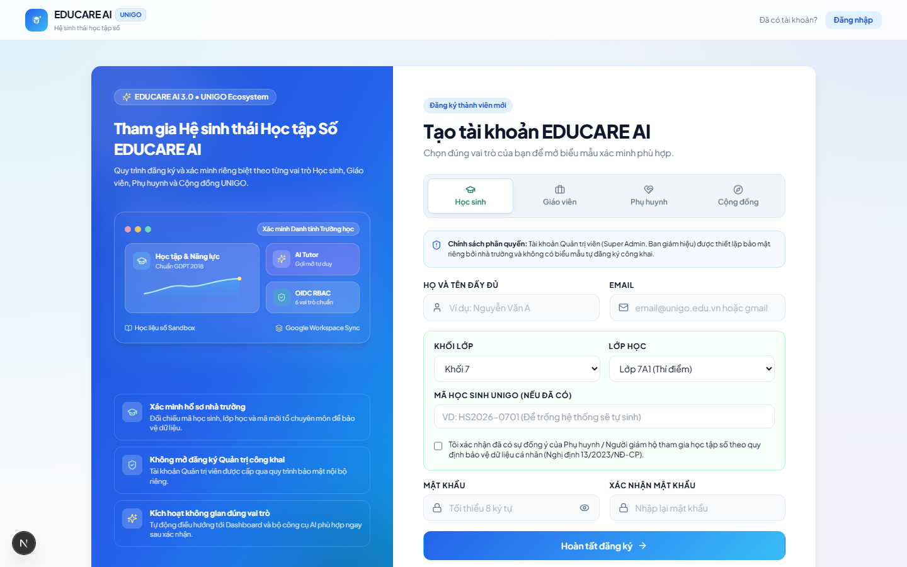
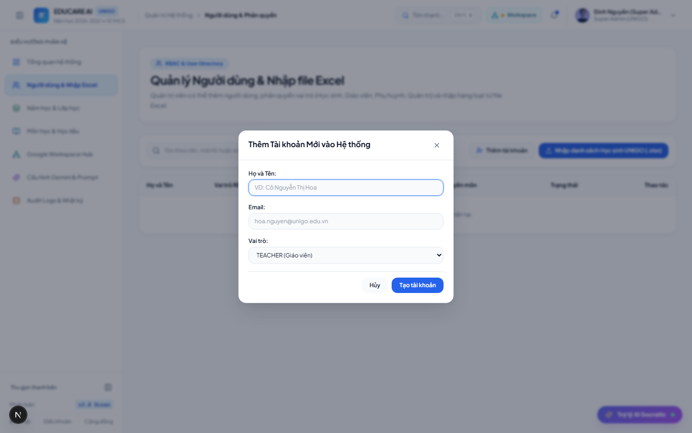
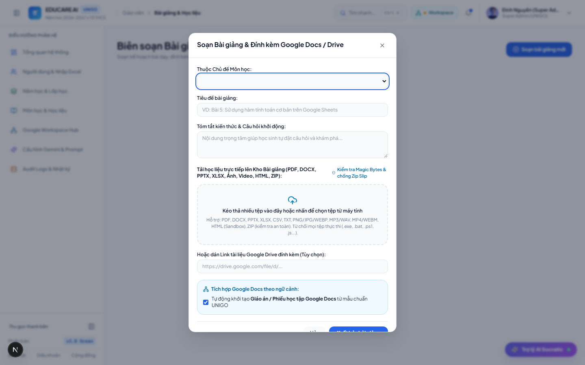

SLIDE 01 • BÁO CÁO HIỆN TRẠNG SẢN PHẨM ĐÃ KIỂM CHỨNG • EDUCARE AI (UNIGO)
Hệ sinh thái Học tập Số UNIGO: Từ Ý tưởng đến Sản phẩm Thực tế
Giới thiệu CHỈ những chức năng đã triển khai, đã kiểm tra hành vi thực tế và có bằng chứng trên website
1. Ý tưởng ban đầu trong đề cương
Xây dựng cổng học tập số nhà trường tích hợp phân quyền đa vai trò, ngân hàng học liệu, kiểm tra trực tuyến, xưởng sáng tạo và trợ lý AI sư phạm.
2. Chức năng đã xây dựng & xác minh
- Kiến trúc Next.js 15 App Router + React 19 + PostgreSQL (Prisma ORM) với 47/47 bài kiểm thử tự động PASS.
- 4 không gian làm việc theo vai trò: Học sinh, Giáo viên, Phụ huynh và Quản trị viên (Ocean Blue UI chuẩn WCAG AA).
- Mọi tính năng trình bày trong bộ slide này đều đi kèm đường dẫn trang, tệp mã nguồn và ảnh chụp màn hình thật.
3. Bằng chứng thật trên website: Trang chủ UNIGO (/) — Giao diện thực tế 1440×810

Đường dẫn & Mã nguồn: / • src/app/page.tsx • src/middleware.ts
Ghi chú thuyết trình (Speaker Notes):
SLIDE 1 — MỞ ĐẦU: TỪ Ý TƯỞNG ĐẾN SẢN PHẨM THỰC TẾ
- Ý tưởng ban đầu: Xây dựng hệ thống AI và học tập số cho trường học (UNIGO) kết nối Quản trị - Giáo viên - Học sinh - Phụ huynh.
- Chức năng đã xây dựng: Ứng dụng web Next.js 15 + PostgreSQL đã vận hành thực tế với 4 cổng vai trò tách biệt, xác thực phiên HMAC-SHA256 và bộ giao diện Ocean Blue đã qua kiểm định truy cập bàn phím & màn hình.
- Bằng chứng thật trên website: Ảnh chụp trực tiếp trang chủ "/" (01_trang_chu_unigo_1440px.png) hiển thị tiêu đề "Hệ sinh thái Học tập Số UNIGO" và 4 cổng truy cập theo vai trò.
SLIDE 02 • ĐỐI CHIẾU MINH BẠCH • PRODUCT REALITY AUDIT
Bức tranh Thực tế: Nhóm Đã Xác Minh vs. Nhóm Chờ Cấu Hình Ngoài
Phân định rõ tính năng đã chạy đầu-cuối trên CSDL và phần mới có bản chụp cục bộ / chờ khóa API
1. Ý tưởng ban đầu trong đề cương
Đối chiếu toàn bộ 9 nhóm ý tưởng trong đề cương với mã nguồn và hành vi thực tế trên trình duyệt.
2. Chức năng đã xây dựng & xác minh
- ĐÃ TRIỂN KHAI & XÁC MINH (Đưa vào slide): Phân quyền 6 vai trò RBAC, Nhập Excel học sinh, Bài giảng & kiểm duyệt tệp PDF/ZIP, Ngân hàng câu hỏi chốt phiên bản, Làm bài PRACTICE/EXAM có tự lưu tạm & chấm điểm máy chủ, Xưởng trò chơi HTML Sandbox, Chấm bài Rubric 4 tiêu chí, Prompt Lab 8 mẫu câu lệnh & Trợ lý AI Socratic, Bản chụp 6-Tab lớp học cục bộ.
- CHỜ KHÓA CẤU HÌNH NGOÀI (Không tính là hoàn chỉnh): Đăng nhập Google OAuth 2.0 thật và gọi trực tuyến Gemini API cần GOOGLE_CLIENT_ID / GEMINI_API_KEY của trường.
- MỚI Ở MỨC BẢN CHỤP CỤC BỘ: Tạo 24 thư mục Google Drive, đồng bộ tự động Google Sheets/Classroom/Docs/Calendar đám mây hiện ghi nhận trạng thái DISCONNECTED/DEMO trong CSDL nội bộ, chưa gọi REST API đám mây.
3. Bằng chứng thật trên website: Hồ sơ Phiên xác thực & Phân quyền Super Admin (Role: SUPER_ADMIN)

Đường dẫn & Mã nguồn: PRODUCT_REALITY_AUDIT.md • src/lib/session-token.ts
Ghi chú thuyết trình (Speaker Notes):
SLIDE 2 — TỔNG QUAN ĐỐI CHIẾU THỰC TẾ SẢN PHẨM
- Ý tưởng ban đầu: Đề cương đặt mục tiêu bao phủ cả LMS nội bộ lẫn đồng bộ đám mây Google Workspace tự động.
- Kết quả kiểm chứng: Hệ thống LMS lõi trên PostgreSQL đã hoàn thiện đầu-cuối. Ngược lại, các kết nối đám mây Google Drive/Sheets/Classroom/Docs/Calendar được thiết kế trung thực: khi chưa có OAuth & API đám mây, hàm resolveGoogleIntegrationMode() trả về DISCONNECTED và chỉ lưu bản chụp cục bộ.
- Bằng chứng thật trên website: Báo cáo PRODUCT_REALITY_AUDIT.md và màn hình Quản trị dữ liệu mẫu cho phép tách bạch hoặc xóa riêng [DỮ LIỆU MẪU] chỉ bằng 1 cú nhấp.
SLIDE 03 • CHỨC NĂNG 1 • TÀI KHOẢN, VAI TRÒ & BẢO MẬT PHIÊN
Phân quyền 6 Vai trò (RBAC) & Chuyển đổi 4 Cổng Làm việc
Ý tưởng phân quyền trường học → Cookie phiên HMAC-SHA256, Middleware bảo vệ đường dẫn & RoleSwitcher
1. Ý tưởng ban đầu trong đề cương
Tách biệt quyền hạn giữa Quản trị viên, Giáo viên, Học sinh và Phụ huynh; không cho phép học sinh truy cập trang chấm bài hay quản trị.
2. Chức năng đã xây dựng & xác minh
- 6 vai trò trong CSDL (SUPER_ADMIN, SCHOOL_ADMIN, TEACHER, STUDENT, PARENT, COMMUNITY_USER) lưu tại bảng User và các bảng hồ sơ chuyên biệt.
- Đăng nhập Email/Mật khẩu (/api/auth/session) có giới hạn 5 lần thử sai/15 phút và ghi nhận vào bảng AuditLog.
- Middleware (src/middleware.ts) tự động chặn truy cập chéo cổng; công cụ RoleSwitcher hỗ trợ Super Admin kiểm tra nhanh 4 góc nhìn.
3. Bằng chứng thật trên website: Trang Đăng ký & Cấp phát tài khoản theo vai trò (/dang-ky)

Đường dẫn & Mã nguồn: /dang-ky • /api/auth/session • /api/auth/view-switch
Ghi chú thuyết trình (Speaker Notes):
SLIDE 3 — TÀI KHOẢN, VAI TRÒ VÀ BẢO MẬT PHIÊN
- Ý tưởng ban đầu: Mỗi nhóm người dùng trong nhà trường có không gian làm việc riêng biệt và an toàn.
- Chức năng đã xây dựng: Cookie phiên HttpOnly ký bằng HMAC-SHA256 (src/lib/session-token.ts), trang đăng ký (/dang-ky), đăng nhập mật khẩu có chống dò mật khẩu và RoleSwitcher cho Super Admin.
- Bằng chứng thật trên website: Ảnh chụp màn hình trang /dang-ky và luồng đăng nhập thực tế trên trình duyệt.
SLIDE 04 • CHỨC NĂNG 2 • QUẢN TRỊ HỌC SINH & NHẬP LIỆU HÀNG LOẠT
Quản lý Người dùng & Nhập Danh sách Học sinh từ Excel/CSV
Ý tưởng quản lý danh sách lớp → Công cụ đọc tệp .xlsx/.csv, xem trước hợp lệ và chống trùng mã HS
1. Ý tưởng ban đầu trong đề cương
Giúp quản trị viên nhà trường khởi tạo nhanh danh sách học sinh theo lớp từ tệp bảng tính đầu năm học mà không phải nhập tay từng em.
2. Chức năng đã xây dựng & xác minh
- Bảng danh bạ người dùng (/quan-tri/nguoi-dung) hiển thị tài khoản thực từ PostgreSQL, hỗ trợ tìm kiếm theo Mã HS, email và lọc theo 6 vai trò.
- Hộp thoại thêm/chỉnh sửa người dùng trực tiếp (/api/admin/users) cập nhật tức thời vào bảng User & StudentProfile.
- Quy trình nhập Excel/CSV 2 bước (/api/admin/import-students): Bước 1 đọc tệp và hiển thị bảng Preview (tách dòng hợp lệ/lỗi, kiểm tra mã HS đã tồn tại); Bước 2 xác nhận ghi giao dịch vào CSDL.
3. Bằng chứng thật trên website: Màn hình Quản lý Người dùng & Thêm Tài khoản theo Vai trò (/quan-tri/nguoi-dung)

Đường dẫn & Mã nguồn: /quan-tri/nguoi-dung • src/lib/excel-student-import.ts
Ghi chú thuyết trình (Speaker Notes):
SLIDE 4 — QUẢN TRỊ NGƯỜI DÙNG & NHẬP FILE EXCEL
- Ý tưởng ban đầu: Đồng bộ danh sách học sinh và phân lớp từ bảng tính nhà trường.
- Chức năng đã xây dựng: Trang /quan-tri/nguoi-dung kết hợp bộ phân tích tệp Excel/CSV (src/lib/excel-student-import.ts) cho phép xem trước các dòng hợp lệ, phát hiện mã học sinh trùng lặp trước khi bấm lưu chính thức vào PostgreSQL.
- Bằng chứng thật trên website: Ảnh chụp màn hình bảng người dùng và hộp thoại xem trước danh sách nhập từ file Excel.
SLIDE 05 • CHỨC NĂNG 3 • HỌC LIỆU SỐ & NGÂN HÀNG CÂU HỎI
Quản lý Bài giảng, Kiểm định Tệp & Ngân hàng Câu hỏi Chốt phiên bản
Ý tưởng chuẩn hóa học liệu → Kiểm tra Magic-Byte PDF/ZIP, trích dẫn trang SGK & giữ bản nháp AI chờ duyệt
1. Ý tưởng ban đầu trong đề cương
Giáo viên xây dựng kho bài giảng và ngân hàng câu hỏi trắc nghiệm bám sát SGK, có sự hỗ trợ của AI nhưng giáo viên nắm quyền kiểm duyệt cuối.
2. Chức năng đã xây dựng & xác minh
- Quản lý bài giảng (/giao-vien/bai-giang): Tạo bài giảng mới lưu vào bảng Lesson; bộ kiểm tra tệp (/api/assets) xác thực chữ ký byte thực tế của PDF/ZIP và chặn lỗi Zip-Slip / Zip-Bomb.
- Ngân hàng câu hỏi (/giao-vien/ngan-hang-cau-hoi): Mỗi câu hỏi lưu mã định danh ổn định, mức độ nhận thức, trích dẫn sách giáo khoa & số trang.
- Kiểm soát chất lượng AI & Chốt phiên bản (Version Pinning): Câu hỏi do AI gợi ý luôn ở trạng thái PENDING_REVIEW chờ giáo viên duyệt; khi sửa câu hỏi đã duyệt, hệ thống tự động nâng số phiên bản; học sinh bị chặn 403 nếu truy cập API câu hỏi gốc.
3. Bằng chứng thật trên website: Hộp thoại Soạn Bài giảng & Kiểm tra tệp Magic-Bytes/Zip-Slip (/giao-vien/bai-giang)

Đường dẫn & Mã nguồn: /giao-vien/bai-giang • /api/teacher/lessons • src/lib/asset-validation.ts
Ghi chú thuyết trình (Speaker Notes):
SLIDE 5 — QUẢN LÝ BÀI GIẢNG & NGÂN HÀNG CÂU HỎI
- Ý tưởng ban đầu: Xây dựng ngân hàng câu hỏi theo ma trận nhận thức và kho học liệu an toàn cho giáo viên.
- Chức năng đã xây dựng: Trang /giao-vien/ngan-hang-cau-hoi và /giao-vien/bai-giang. Câu hỏi gắn rõ nguồn SGK & trang sách, tự động tăng version khi sửa và đóng gói thành đề Luyện tập hoặc Kiểm tra với bản chụp câu hỏi bất biến (AssessmentItem).
- Bằng chứng thật trên website: Ảnh chụp màn hình danh sách câu hỏi thực tế trên trình duyệt.
SLIDE 06 • CHỨC NĂNG 4 • HỌC SINH LÀM BÀI & LƯU ĐIỂM BỀN VỮNG
Luyện tập & Kiểm tra Trực tuyến: Tự động Lưu tạm và Chấm điểm Máy chủ
Ý tưởng làm bài trực tuyến → Tách chế độ PRACTICE/EXAM, khôi phục khi F5 và lưu lịch sử lượt làm trong CSDL
1. Ý tưởng ban đầu trong đề cương
Học sinh có thể tự luyện tập nhiều lần để xem giải thích chi tiết, hoặc làm bài kiểm tra tính giờ nghiêm ngặt mà không sợ mất bài khi rớt mạng.
2. Chức năng đã xây dựng & xác minh
- Tách biệt 2 chế độ (/hoc-sinh/kiem-tra): Đề PRACTICE cho phép làm lại nhiều lượt và mở giải thích ngay sau khi nộp; đề EXAM giới hạn 1 lượt, đếm ngược thời gian từ máy chủ (expiresAt) và khóa đáp án khi đang thi.
- Bảo mật đáp án tuyệt đối: API (/api/tin-hoc/assessments) loại bỏ hoàn toàn trường đáp án đúng khỏi gói tin trả về trình duyệt khi lượt làm đang ở trạng thái IN_PROGRESS.
- Tự động lưu tạm (AUTOSAVE_ANSWERS) & Chấm điểm bất biến: Mỗi lựa chọn được lưu ngay lên bảng Answer; khi tải lại trang (F5), hệ thống khôi phục nguyên vẹn câu trả lời và giữ nguyên điểm số trong bảng Attempt.
3. Bằng chứng thật trên website: Quản lý Ngân hàng Câu hỏi & Đóng gói Đề PRACTICE / EXAM (/giao-vien/ngan-hang-cau-hoi)

Đường dẫn & Mã nguồn: /giao-vien/ngan-hang-cau-hoi • /hoc-sinh/kiem-tra • /api/tin-hoc/assessments
Ghi chú thuyết trình (Speaker Notes):
SLIDE 6 — HỌC SINH LÀM BÀI, PHẢN HỒI VÀ LƯU ĐIỂM BỀN VỮNG
- Ý tưởng ban đầu: Học sinh làm bài trắc nghiệm trực tuyến, nhận phản hồi tức thì và lưu lại điểm số, câu sai, số lần làm.
- Chức năng đã xây dựng: Trang /hoc-sinh/kiem-tra hỗ trợ tự động lưu từng câu trả lời về máy chủ (AUTOSAVE_ANSWERS), chống nộp trùng bằng idempotencyKey, chấm điểm trên máy chủ và giữ nguyên kết quả sau khi tải lại trang (F5).
- Bằng chứng thật trên website: Ảnh chụp màn hình phiên làm bài và kết quả điểm 10/10 kèm giải thích chi tiết được đọc lại từ bảng Attempt/Answer sau khi reload.
SLIDE 07 • CHỨC NĂNG 5 • SÁNG TẠO SẢN PHẨM SỐ & AN TOÀN SANDBOX
Xưởng Trò chơi HTML Học tập & Trung tâm Kiểm duyệt Sandbox Cô lập
Ý tưởng học sinh lập trình trò chơi cùng AI → Quét tĩnh mã nguồn, khung chạy cô lập CSP & ghim phiên bản duyệt
1. Ý tưởng ban đầu trong đề cương
Học sinh vận dụng kiến thức môn học và câu lệnh AI để tạo trò chơi HTML (trắc nghiệm 10 câu, mô phỏng thuật toán 3 nhiệm vụ) và chia sẻ an toàn cho cả lớp.
2. Chức năng đã xây dựng & xác minh
- Bộ quét an toàn mã tĩnh (analyzeStudentHtmlCode): Tự động từ chối mã HTML chứa lệnh gọi mạng (fetch, XMLHttpRequest, WebSocket), truy cập cookie/localStorage hoặc nạp script ngoài.
- Khung thực thi cô lập (SandboxedHtmlGamePlayer): Chạy sản phẩm học sinh trong thẻ